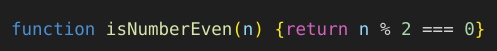

Testes de Verificação
>> código fonte dos testesTestes Unitários
Análise estática
- O aviso indica a falta da configuração do "type": "module", mas ao fazer isso, os erros que o ESLint mostra, continuam os mesmos
- O gerador aleatório, de acordo com o SonarJS, não é seguro para usos em ferramentas de maior importância
Complexidade de código
- O gerador aleatório, de acordo com o SonarJS, não é seguro para usos em ferramentas de maior importância
- A função "getNumbersArray" possui complexidade maior que a especulada
Script usado:
npm run complexity-functions
- Nos testes, em casos de simulação da chamada de um erro, a ferramenta que mede complexidade aponta uma complexidade nas arrow functions
Script usado:
npm run complexity-tests
Qualidade de estilo
- Tanto nas funções como nos testes, a ferramenta que garante a qualidade de estilo, formata códigos de acordo com as melhores práticas
Script usado:
npm run correct-functions

Script usado:
npm run correct-tests